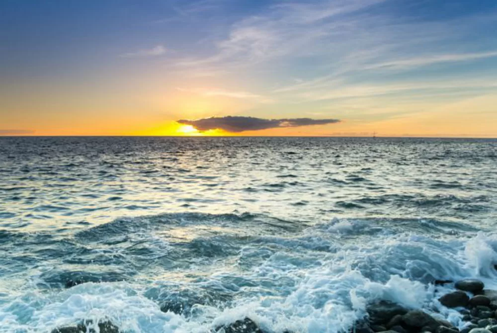

<!DOCTYPE html>
<html lang="en">
    <head>
        <title>Earth</title>
        <link rel="stylesheet" href="styles.css">
        
    </head>

</html>
<body>
    <h1>Oceans of the world</h1>
    <h2>I love our oceans</h2>

    <p>Cupcake tootsie roll sweet caramels oat cake fruitcake gummies. Gummies pastry candy cupcake ice cream dragée jelly beans gingerbread. Fruitcake sweet roll sweet marzipan cheesecake. Jelly-o candy canes jelly caramels cookie gummi bears donut chupa chups cotton candy. Toffee candy canes cupcake sesame snaps chupa chups ice cream soufflé bonbon cupcake. Sugar plum icing danish croissant sweet cake dessert. Caramels tootsie roll brownie jujubes marzipan lemon drops dragée. Lollipop chocolate cake cake jujubes sesame snaps cupcake chocolate cake topping.</p>
    <p>Candy canes toffee pastry ice cream pudding croissant. Bonbon sesame snaps apple pie dessert cake danish bonbon macaroon danish. Icing dragée candy canes fruitcake candy gummies tiramisu pie. Brownie cookie shortbread gummies donut icing marshmallow biscuit. Macaroon gummi bears cake biscuit jelly gummi bears. Muffin gummies macaroon gummi bears candy canes jelly beans wafer halvah danish.</p>

    I love our oceans
        
        

        <h3> Facts about our Oceans</h3>
        </ol>
            <li>There are five recognized oceans on Earth.</li>
            <li>Oceans cover 71% of the Earth's surface.</li>
            <li>They produce more than half of the oxygen we breathe.</li>
        </ol>
        <table>
            <tr>
                <th>Continent</th>
                <th>Oceans</th>
                <th>Salinity (parts per thousand)</th>

            </tr>
            <tr>
                <td>North America</td>
                <td>Europe</td>
                <td>Australia</td>

            </tr>
            <tr>
                <td>Pacific Ocean</td>
                <td>Atlantic Ocean </td>
                <td>Indian Ocean</td>
            </tr>
            <tr>
                <td>33-37</td>
                <td>35</td>
                <td>32-37</td>
            </tr>
        </table>
        <p>Read here for more Horse facts <p>
        <h4><a href="https://education.nationalgeographic.org/resource/all-about-the-ocean/">Ocean Info</a</h4>
</body>
